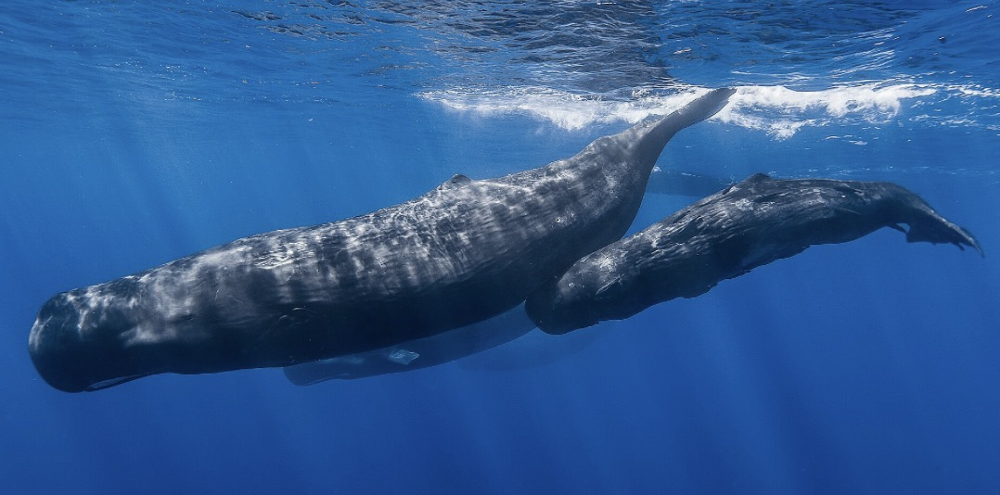
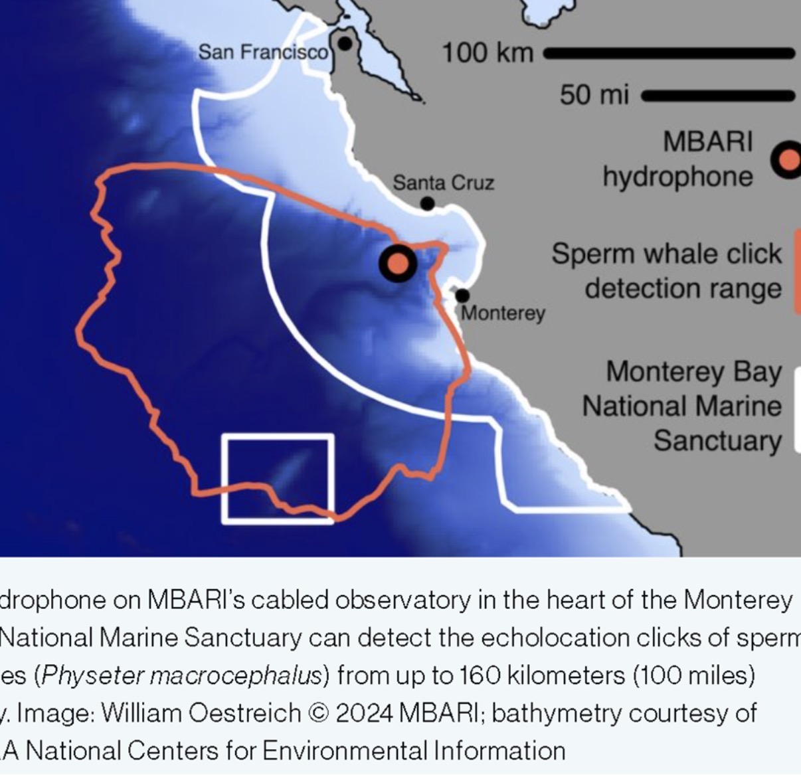
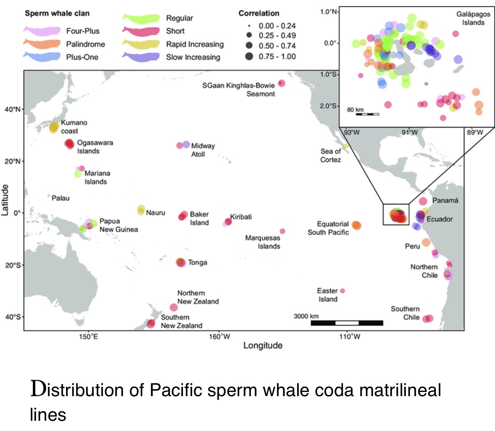
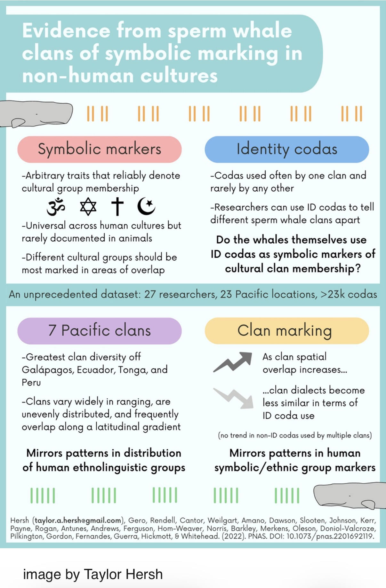
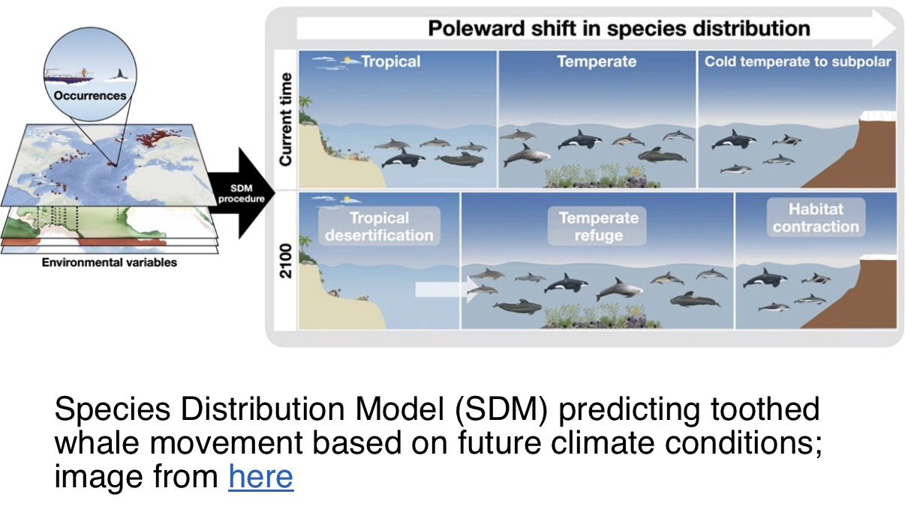

At a glance
Deep-diving toothed whales whose powerful echolocation clicks can be detected across long distances. Sperm whale groups have culturally transmitted patterns of social clicks called codas.
Recognizing a sperm whale
A huge, blunt head, narrow lower jaw and wrinkled skin distinguish this largest toothed whale. The single blowhole sits toward the left front of the head; its blow angles forward and left. A low dorsal hump replaces the tall fin seen on many dolphins. Males grow much larger than females.
Source: NOAA Fisheries · checked November 1, 2026.
Deep diving & feeding
Squid are major prey; fish, including some sharks and rays, are also eaten. Foraging dives commonly last about 45 minutes and reach around 600 metres (2,000 feet), with deeper dives possible. The whale returns to the surface to breathe between dives.
Source: NOAA Fisheries · checked November 1, 2026.
Sound & the enormous head
The head contains spermaceti, a waxy material associated with sound focusing. Echolocation clicks help locate prey in darkness; social codas are patterned click sequences. Hearing clicks does not, by itself, reveal exactly where a whale is.
Source: NOAA Fisheries · checked November 1, 2026.
Family life & calves
Related females and their young form enduring social units. Females help care for calves. Young males eventually leave these groups; older males range widely and return to warmer breeding areas. Pregnancy lasts about 14–16 months, and calves may nurse for several years.
Source: International Whaling Commission · checked November 1, 2026.
Built for depth
Oxygen-storing myoglobin in the muscles and a rib cage that can compress during descent help make prolonged deep dives possible. A dive is a breath-hold: sperm whales are mammals and must return to the air to breathe.
Source: International Whaling Commission · checked November 1, 2026.
Conservation & observation
Commercial whaling heavily reduced populations. In U.S. waters the species is listed as endangered under the Endangered Species Act. Current pressures include entanglement, vessel collisions, marine debris and ocean noise. Observe without approaching or disrupting whales.
Source: NOAA Fisheries · checked November 1, 2026.
How researchers recognize individuals
Marks and scars on flukes and dorsal fins help researchers follow individual whales over time. Photo-identification, acoustic recordings, genetics and tags reveal different parts of their lives. A sound detection, a photograph and a tracked dive each answer different questions.
Source: International Whaling Commission · checked November 1, 2026.
MBARI hydrophone and Monterey Bay
The February 11, 2026 Field Note describes seven years of passive acoustic monitoring along Central California. Different ages and sexes were detected throughout the year, with more detections in fall and winter. A detection does not mean the whale was in Monterey Bay itself: clicks can be heard up to approximately 160 km (100 miles) under favorable conditions.

Clans, codas and cultural identity
Codas are patterned sequences of clicks used in sperm whale communication. Researchers distinguish seven Pacific acoustic clans based on characteristic coda usage. The visiting group's proposed Palindrome identification was not confirmed.


Age, sex and seasonal distribution
Adult males are commonly associated with high latitudes, while female groups and calves are more often observed in tropical regions. Acoustic detections from Central California challenge any interpretation of those patterns as exclusive.
Changing oceans and future ranges
Ocean warming and changes in prey distribution could shift toothed whale ranges. These are hypotheses and model projections, not confirmed explanations for individual sightings.

Visitor-friendly takeaway
“We can sometimes hear sperm whales long before we could ever see them.” Their clicks reveal both their presence and clues to how their social groups communicate.
Source: Naturalist Shift Update, February 11, 2026. Observations and hypotheses are distinguished throughout.
Photo sources
- “Sperm whale pod” — Photo: Gabriel Barathieu, via Wikimedia Commons. CC BY-SA 2.0. Cropped/resized copy; this image version is shared under the same license. ↩
- William Oestreich © 2024 MBARI; bathymetry NOAA NCEI. ↩
- Infographic by Taylor Hersh, based on Hersh et al. (2022), PNAS. ↩